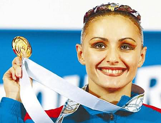
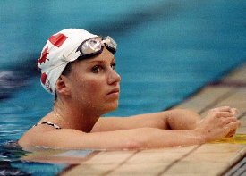
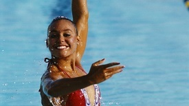

FINA veya Federation Internationale de Natation veya (Uluslararası Yüzme Federasyonu), senkronize yüzmenin yönetim organıdır. Bu, tüm dünyadaki uluslararası şampiyonaları düzenler. Bunun dışında her ülkenin oyunu düzenlemek için kendi yönetim organı vardır. Önemli şampiyonalardan bazılarının listesi aşağıdaki gibidir.

Olga Brusnikina, üç kez Olimpiyatları kazanan Rusya’dan senkronize bir yüzücü. Kariyerinin başlangıcında, 1993 Dünya Gençler Senkro Şampiyonasında solo rutinde yer aldı. 2000 yılında düet dalında altın madalya kazandı ve ortağı Mariya Kiselyova idi.

Carolyn Waldo, uluslararası yarışmalarda solo ve düet olarak yarışan Kanadalı senkronize bir yüzücüdür. Bir Olimpiyatta iki altın kazanma rekoruna sahip. Bunu 1988’de hem solo hem de düet yarışmalarını kazandığı yerde yaptı. 1984 Olimpiyatları’nda gümüş madalya kazandı. 1985’te Rome Open ve Spanish Open’a katıldı ve ikisini de kazandı.

Tracie Ruiz, Amerika Birleşik Devletleri’nden üç kez Olimpiyatları kazanan senkronize bir yüzücü. Tüm kariyeri boyunca çeşitli yarışmalarda 41 altın madalya kazandı. 1983 ve 1987 Pan Games’te her birinde birer altın kazandı.